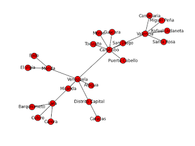

Creación de grafos con networkx. Parte 1.
Publicado el lun 26 noviembre 2012 en Tutorial de Python • 2 min de lectura
Networkx es una librería para python que facilita la creación, manipulación y estudio de estructuras dinámicas, y funciones para redes complejas.
En el siguiente enlace encontrarán un tutorial del sitio oficial de networkx. Donde explican como crear un grafo, los nodos y como enlazar dichos nodos.
El siguiente ejemplo creará nodos sobre Venezuela, algunos Estados y Ciudades. Lo primero que se hace es crear los nodos, luego se definen los enlaces entre cada nodo.
El código se muestra a continuación:
#!/usr/bin/env python
# -*- coding: utf-8 -*-
#Se importa la libreria networkx como nx
import networkx as nx
#Se importa la libreria pyplot de matplotlib como plt
import matplotlib.pyplot as plt
#Se crea un grafo vacio
G=nx.Graph()
#Se crean los nodos:
#Nodo Venezuela
G.add_node("Venezuela")
#Se crean los nodos de los estados
G.add_nodes_from(["Carabobo","Miranda","Aragua","Merida","Lara","Distrito Capital"])
#Se crean los nodos de las ciudades.
G.add_nodes_from((["Valencia","Barquisimeto","Merida","Caracas","Guacara","Carora","Cubiro"]))
#Se crean los enlaces de los estados al país
G.add_edge("Carabobo","Venezuela")
G.add_edge("Lara","Venezuela")
G.add_edge("Merida","Venezuela")
G.add_edge("Distrito Capital","Venezuela")
G.add_edge("Aragua","Venezuela")
G.add_edge("Miranda","Venezuela")
#Se crean los nodos de las ciudades a su respectivo estado
v1 = ("Valencia","Carabobo")
v2 = ("Guacara","Carabobo")
dc = ("Caracas","Distrito Capital")
G.add_edge(*v1)
G.add_edge(*v2)
G.add_edge("Tocuyito","Carabobo")
G.add_edge("San Diego","Carabobo")
G.add_edge("Puerto Cabello","Carabobo")
G.add_edge("Moron","Carabobo")
G.add_edge("Rafael Urdaneta","Valencia")
G.add_edge(u"Miguel Peña","Valencia")
G.add_edge("Santa Rosa","Valencia")
G.add_edge("Candelaria","Valencia")
G.add_edge(*dc)
G.add_edge("Barquisimeto","Lara")
G.add_edge("Carora","Lara")
G.add_edge("Cubiro","Lara")
G.add_edge("Merida","Merida")
G.add_edge("El Vigia","Merida")
G.add_edge("Ejido","Merida")
#Se dibuja el grafo
nx.draw(G)
#Se muestra en pantalla
plt.show()
#Se vuelve a dibujar el grafo y se salva en un archivo png.
nx.draw(G)
plt.savefig("networkx1.png")
#Se muestra información de los nodos (cantidad, nodos)
print "Nodos: ", G.number_of_nodes(), G.nodes()
#SE muestra información de los enlaces (cantidad, enlaces)
print "Enlaces: ", G.number_of_edges(),G.edges()
La imagen que muestra el gráfico del resultado del programa en la siguiente:

El resultado de mostrar la cantidad de nodos, los nodos, la cantidad de enlaces y los enlaces es la siguiente:
Nodos: 23 ['Caracas', 'Ejido', u'Miguel Pe\xf1a', 'Tocuyito', 'Aragua', 'Santa Rosa', 'Valencia', 'Moron', 'Carora', 'Venezuela', 'San Diego', 'Cubiro', 'Miranda', 'Puerto Cabello', 'El Vigia', 'Distrito Capital', 'Barquisimeto', 'Merida', 'Rafael Urdaneta', 'Lara', 'Guacara', 'Carabobo', 'Candelaria']
Enlaces: 23 [('Caracas', 'Distrito Capital'), ('Ejido', 'Merida'), (u'Miguel Pe\xf1a', 'Valencia'), ('Tocuyito', 'Carabobo'), ('Aragua', 'Venezuela'), ('Santa Rosa', 'Valencia'), ('Valencia', 'Candelaria'), ('Valencia', 'Carabobo'), ('Valencia', 'Rafael Urdaneta'), ('Moron', 'Carabobo'), ('Carora', 'Lara'), ('Venezuela', 'Distrito Capital'), ('Venezuela', 'Lara'), ('Venezuela', 'Merida'), ('Venezuela', 'Miranda'), ('Venezuela', 'Carabobo'), ('San Diego', 'Carabobo'), ('Cubiro', 'Lara'), ('Puerto Cabello', 'Carabobo'), ('El Vigia', 'Merida'), ('Barquisimeto', 'Lara'), ('Merida', 'Merida'), ('Guacara', 'Carabobo')]
El código lo pueden bajar del repositorio de bitbucket.
¡Haz tu donativo! Si te gustó el artículo puedes realizar un donativo con Bitcoin (BTC) usando la billetera digital de tu preferencia a la siguiente dirección: 17MtNybhdkA9GV3UNS6BTwPcuhjXoPrSzV
O Escaneando el código QR desde la billetera: